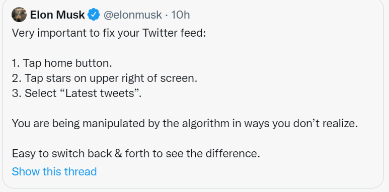
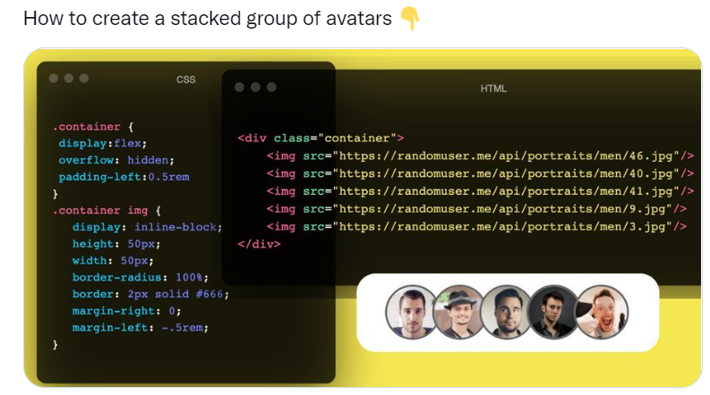

- Home
- Explore
- Notifications
- Messages
- Bookmarks
- List
- Profile
- More
Home
What's happening?
Show 123 Zweets
Udhaiya @udhisv . 1h
I recommend this. I did it last year after I noticed that I wasn't seeing tweets by people I followed who had few followers. Basically it amounts to telling Twitter "the tweets I want to see are the ones I asked to see."
30
16
20
12
...
Paul Graham @paulg . 1h
I recommend this. I did it last year after I noticed that I wasn't seeing tweets by people I followed who had few followers. Basically it amounts to telling Twitter "the tweets I want to see are the ones I asked to see."
30
16
20
12
...
Search Twitter
Who To Follow
Open Data Science
@odsc
Open Data Science
@odsc
Promoted
show more
Trending in India
#food
197k Zweets
...
What's happening?
Sports .LIVE
India lifts the Thomas Cup trophy for the first time in history
Trending with #CSKvsGT